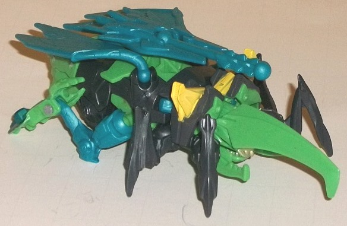
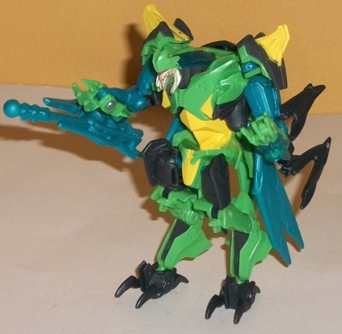
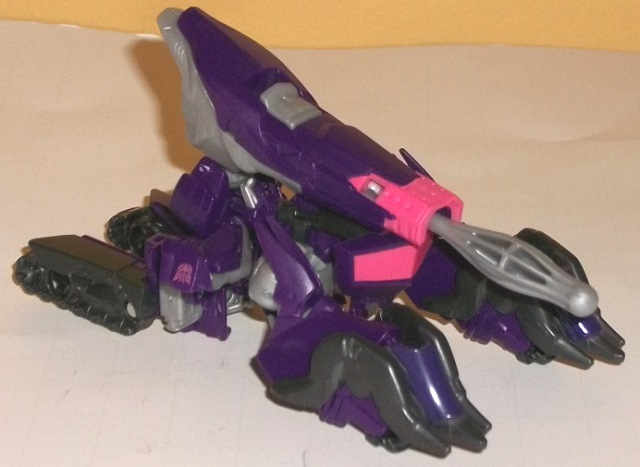
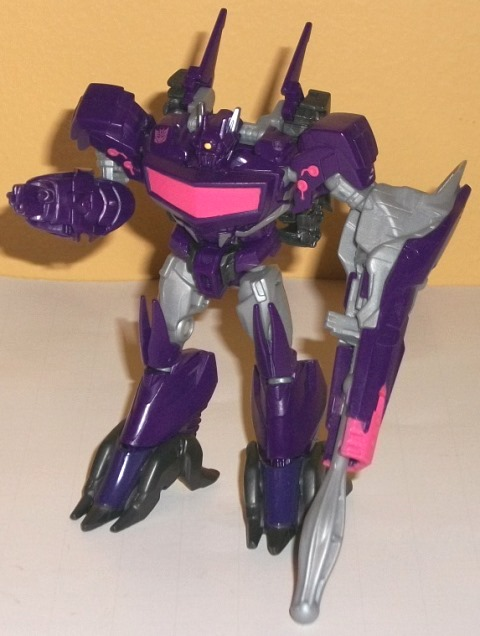

Shockwave
& Bombshock set (Predacons Rising) [Target Exclusive]
Shockwave
& Bombshock set (Predacons Rising) [Target Exclusive]
Set Price
: $15 U.S.
Overall Rating
: 8.0
(NOTE: Because this set is composed of repaints,
this is not a full-blown review. This mainly covers any changes made to
the set and the color scheme, and merely compares it to the original versions
of these molds. For a review on Beast Hunters Hardshell-- the mold used
for Bombshock--go
here
. For a review on
the original Beast Hunters commander class Shockwave toy, go
here
.)
Bombshock


Allegiance
: Predacon
Size
: Commander
Difficulty of Transformation
: Medium
Color Scheme
: Dark semi-metallic
gray, light green, semi-metallic moderately light blue, and some yellow,
silver, moderately dark red, and metallic blue
Individual Rating
: 9.3
Bomb
shock... Hard
shell
...
boy, they're trying to get as close to naming this toy after
G1
Bombshell
as possible without actually naming him G1 Bombshell, aren't
they? Also... Bombshock is a Predacon? Aren't all Prime Predacons supposed
to be dragons-- why's an insect a Predacon? Anyways, those oddities aside,
Bombshock takes the same general basic color scheme from Hardshell of being
gray and green, but brightening it up and "G2-ifying" it a bit. The green
is of a fairly light, leafy shade, and the gray is of a darker-- but semi-metallic--
shade that actually looks pretty good (and I'm generally not a fan of most
shades of gray). The biggest change-- and, in my opinion, the most positive--
is the addition of a really nice shade of semi-metallic blue, which is
used on the wings, weapon, and rear insect legs/robot arms. (There's also
a more metallic variant of this shade painted on the lower arms and robot
neck.) Altogether these colors look great together, and just a titch loud
without going too over-the-top. Particularly with the blue, it really pops.
There's also a little bit of yellow on the shoulders/insect horns and robot
waist, silver on his faces, and red on his eyes/visor-- all are nice shades,
but aren't really used enough to be anymore than minor accent colors and
thus don't really affect the overall scheme much.
No mold changes have
been made to Bombshock.
Bombshock Tech Specs:
Strength: 9.0
Intelligence: 8.0
Speed: 4.0
Endurance: 8.0
Rank: 7.0
Courage: 5.0
Fireblast: 6.0
Skill: 6.0
Shockwave


Allegiance
: Decepticon
Size
: Commander
Difficulty of Transformation
: Easy
Color Scheme
: Dark royal purple,
moderately light semi-metallic gray, and some charcoal black, bright pink,
silver, and yellow
Individual Rating
: 6.7
This deco on Shockwave
still has his main colors-- purple, gray, and black-- but deepens the contrast.
The purple is now a very dark, royal purple-- a very nice shade of the
color, even if it isn't metallic like on the original release of this toy.
The gray is still of the moderately light variant, but it's of a shade
that looks semi-metallic, and thus looks better even without considering
how well it contrasts with the dark purple. The silver paint apps on Shockwave's
abdomen and antennae add some more color variety as well, but what REALLY
stands out is the pink paint used on Shockwave's gun nozzle, chest, and
some shoulder details. I'm not normally a fan of pink-- particularly bright
pink-- but it contrasts very, VERY well with the purple in the amount that
it's used and just really makes the color scheme on this toy. The yellow
dot of paint used on Shockwave's eye-- and nowhere else on the toy-- also
looks great. The only negative I have about Shockwave's color scheme this
time around is that, because his purple is so dark, the charcoal black
doesn't stand out against it much, nor does it really complement the other
colors-- it's just sort of "there", easily confused for more purple under
poor lighting.
No mold changes have
been made to this version of Shockwave.
Shockwave Tech Specs
:
Strength: 8.0
Intelligence: 10.0
Speed: 5.0
Endurance: 7.0
Rank: 8.0
Courage: 6.0
Fireblast: 10.0
Skill: 6.0
Whether I'd recommend
this "double-shock" set of Shockwave and Bombshock depends upon your color
preferences. Do you like more color variance in your toys-- realism be
darned? Than this is the set for you if you want these molds. If you like
more subdued, realistic colors, than go with the individual initial releases
of this version of Shockwave and Hardshell. (All this said, as far as the
molds go this set is a mixed bag-- Bombshock is awesome, but Shockwave's
mold is weak at best.)
Shockwave & Bombshock Bio:
Shockwave uses genetic manipulation
to turn Bombshock into an unstoppable monster!
Reviews by Beastbot
Back to Transformers:
Prime Index